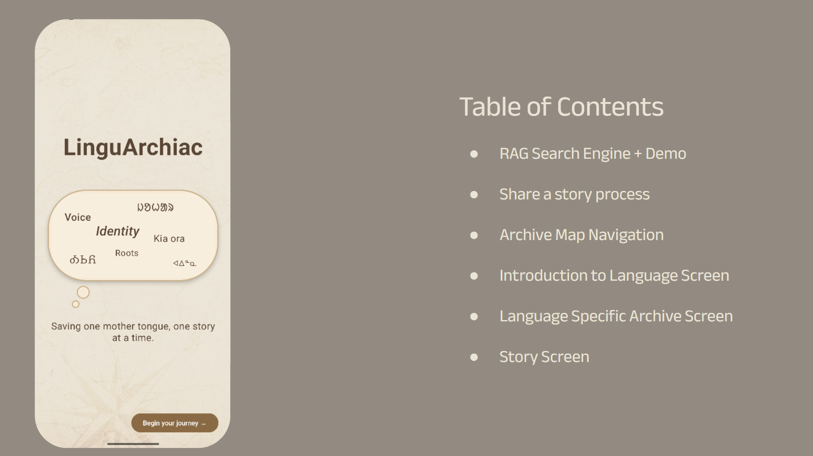

LinguArchiac
Saving one mother tongue, one story at a time.

ABOUT LINGUARCHIAC
Preserving languages through stories.
LinguArchiac is an interactive archive designed to keep languages alive through the voices of those who spoke them before us. When we talk to a friend, or family memember about our day, we tell a story. Maybe not the most interesting one, but nonetheless, a story. More importantly, YOUR story. We keep our languages alive through the stories we speak, the emotions we evoke through a joke, or through shared pain. A language helps us understand each other. LinguArchiac keeps languages alive, through generational stories.
Our archive shares stories, and the voices of those who share them. We have an audio feature, allowing users to hear words, and even if unable to understand them, still appreciate the language, and the stories it has to share. Additionally, you can find translations in a more common language in the area (eg. Ainu is an endangered language in Japan, common language would be Japanese), and in English.
OUR MISSION
Languages don't just carry words, they carry emotions and memories.
Preservation isn’t creating a dictionary and a grammar practice, it’s capturing the thick emotion, and the tone behind the words. Most of all, who says these words. What better way to do that than creating an interactive archive, where you can hear a native speaker’s voice, and listen to the way they tell their story.